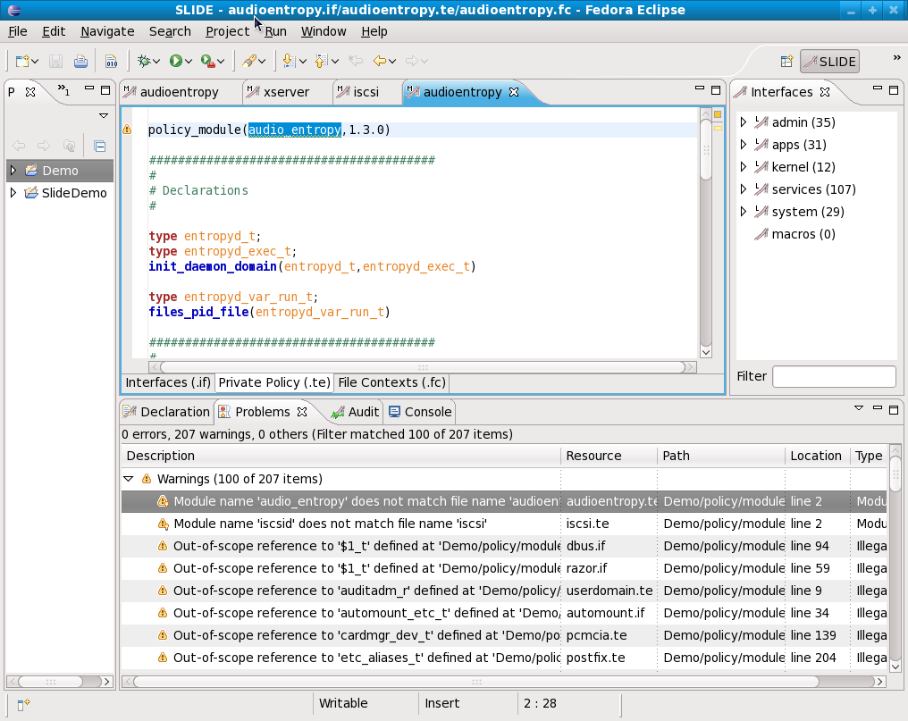
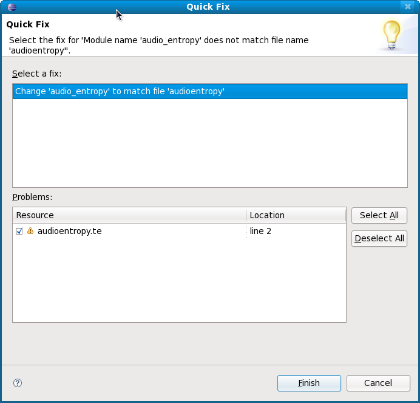

Slide with Shrimp
Navigation: Home
> Slide with Shrimp
Purpose
Slide is a graphical user interface for examining SELinux files created
by Tresys, who has integrated the tool with Shrimp output. This
allows for quickly identifying the location in the policy files of
Shrimp errors.
Running
Slide/Shrimp installation instructions are provided with the release,
along with an example version of the Reference Policy. Once
installed and configured, SLIDE can be accessed through eclipse:
1. Create a Slide Project
- Create Slide Project
- Go to File->New Slide Project;
- Pick a project name;
- Select "Full Reference Policy Project";
- Uncheck "Reference Policy already exists" and click Finish, and
- Once your project appears, right click on the project name, and
check "Shrimp Policy Checking".
- Make sure that when you create the project, you point it to a
full reference policy, and not just the headers, as shrimp requires the
full policy. (The default path,/usr/share/selinux/devel/include,
includes headers only.)
- Load Reference Policy
- To change where SLIDE looks for ref policy In eclipse:
Window->Preferences->SLIDE->Browse for dir containing policy
- Select Shrimp Binary
- Windows menu, then Preferences
- Select SLIDE and expand
- Select "shrimp" from list: "build console, connections,
editor, shrimp"
- Browse to location of shrimp binary
- Build Slide Project,
Project->Build Project. You can watch progress of the build in
the Console tab of the Build pane (bottom section of the Eclipse
window).
- View Error messages from Shrimp
Once the build is complete,shrimp's output may be viewed in the
Problems tab of the Build pane
Demonstration
Slide/Shrimp was run against an slightly older version of the Reference
Policy April 2, 2008 version. Shrimp identified a number
of issues related to the policy which can be seen in the attached
picture in Figure 1.

Figure 1 - Slide/Shrimp example based
on a Reference Policy
Clicking on individual error/warning messages will pull up one or
more files to show the policy definition.
Right clicking on the problem or warning provides a menu of choices:
o Go To opens
the editor to the problem selected
o Show In is
used to show the file in other views if available
o Copy is
used to copy the error to the clipboard
o Select All
is used to select all problems
o Quick Fix
is used to suggest possible fixes for the problems (see next page)
o Properties
shows a dialog with the problem description
One of the choices is "Quick Fix", which will propose and implement a
specific fix when the solution is fairly obvious. Not all
messages have an appropriate Quick Fix. Figure 2 illustrates the
Pop-up Quick Fix screen.

Figure 2 - Quick Fix Screen for making
policy repairs based on shrimp warnings or errors.
References